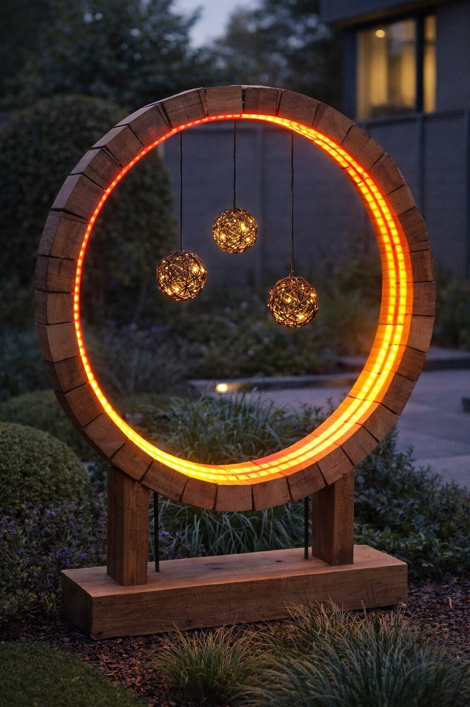
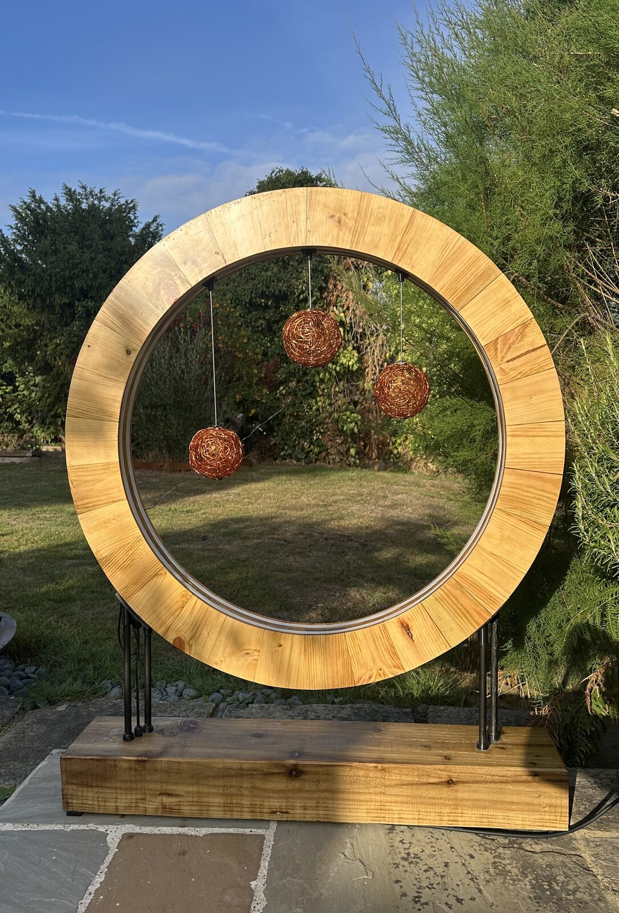
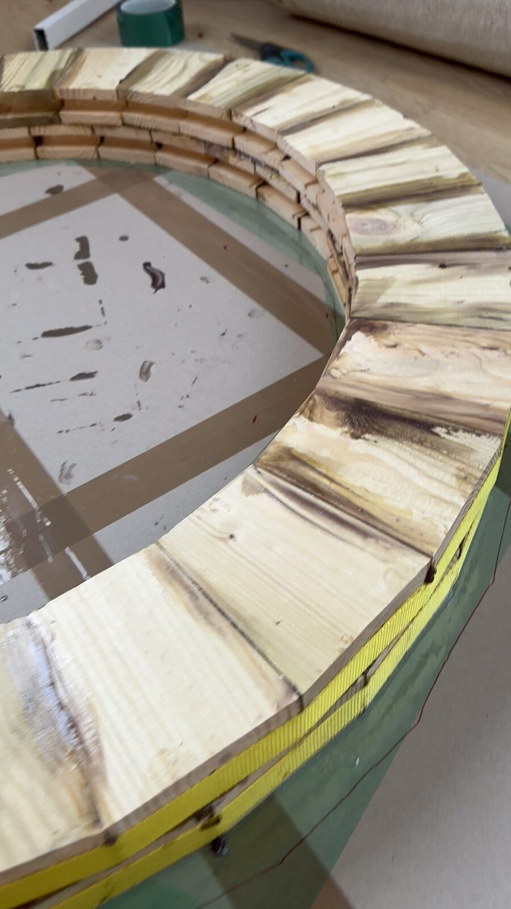

01
From Concept to Reality
The project began with a digital visualisation exploring how a simple circular form could combine sculptural presence with dynamic lighting.
The finished installation closely follows the original concept, retaining its proportions, material character and intended visual effect.
Presented together, the original visualisation and completed sculpture demonstrate the journey from an initial idea to a fully realised installation.


02
Design and Fabrication
The circular structure was constructed from laminated timber sections, shaped and assembled to create a continuous sculptural form.
Individually addressable LEDs were integrated into the structure, with custom-developed control software providing a range of carefully composed lighting sequences.
The project brought together visual design, woodworking, electronics and programming, from initial concept through fabrication and final installation.

03
Light in Motion
The sculpture's character changes through light.
Subtle background colours and animated sequences create movement around the circular form, allowing the installation to shift between a calm architectural presence and a more expressive illuminated artwork.
The animation is integral to the design, rather than simply an additional lighting effect.
Project summary
Project Details
- Setting
- Private garden installation
- Scale
- Approximately 1 metre diameter
- Structure
- Laminated timber circular sculpture
- Lighting
- Individually addressable 12V LED system
- Control
- Custom-programmed animation sequences
- Scope
- Concept design, fabrication, electronics, programming and installation